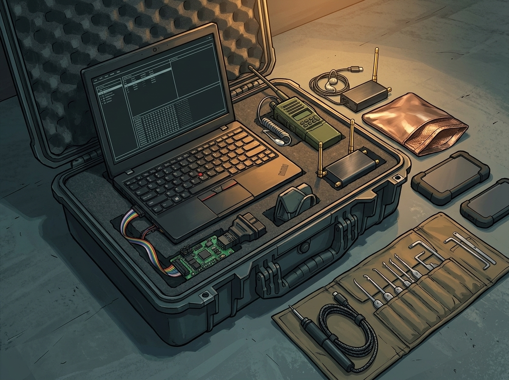

Satya TTRPG Skill System & Hierarchical Skill Trees
Rust Engine Implementation:
crates/satya-engine/src/skills_trees.rs(SkillTreeId,SkillType,SkillCategory,AccessTier,SkillNode,evaluate_skill_prerequisites,evaluate_skill_tree_default,compute_skill_controller) andcrates/satya-engine/src/skills_catalog.rs(CANONICAL_SKILL_TREES— Trees 1–4 in this chapter; Trees 5–8 inskills_trees_tactical_and_social.md). Guided Play Example: See Guide 01: Walking the Lifepaths Roll-by-Roll and Guide 02:KNO -> PHYTeamwork.
This chapter defines the canonical Skill System, Skill Classifications, and the 8 Hierarchical Skill Trees for Satya (set on near-future Earth, 5 years in the future, ca. 2031–2035). It integrates directly with:
- Mathematical Notation, Variables & Formula Glossary (for definitions of all mathematical variables and subscripts such as N, CP, TNP, TNGM, Δtool, Δext),
- Characteristics, Senses, Psyche & Aptitudes (for Controlling Characteristics C ∈ [1, 20] and domain Aptitudes A ∈ [−2, +3]),
2d20xNCascade Engine & Task Resolution (for the2d20xNCascade, Tool Dependency Tiers, Task Prerequisite Gates Class A/B/C, and the Master Task Requirements Table), and- Lifepath Character Creation, Economy & Heat (for chronological skill acquisition from childhood through adult careers).
1. Core Design Philosophy
Satya's skill system is built on five foundational design pillars:
- Lifepath Grounding & Plausibility ("No Scientist with Random Full-Auto"): A character's skills are the organic record of their upbringing, socioeconomic class, schooling quality, life events, and adult careers. A university researcher cannot arbitrarily purchase Fully Automatic Weapons or Clandestine Narcotics Synthesis at character creation unless their lifepath explicitly routed them through military service, law enforcement tactical training, or a criminal syndicate.
- Deep Prerequisite Hierarchies (The Skill Tree): Complex disciplines are gated behind foundational skills. A character who drops out of school at age 15 with only basic Arithmetic (or at best Trigonometry if exceptionally gifted and disciplined) lacks the Calculus, Linear Algebra, and Differential Equations required to learn advanced Aerospace Engineering, Quantum Cryptography, or Machine Learning Architecture. Conversely, street or military lifepaths open restricted and illicit branches inaccessible to sheltered academics.
- Nature of Proficiency (Talents vs. Physical Skills vs. Knowledge Skills): Every skill is classified by how humans acquire and execute it:• Talents (
TAL): Innate, universal human capacities (such as Running, Singing, Observation, or Brawling) in which every non-impaired person possesses a baseline proficiency (N = 1).• Physical Skills (PHY): Trained motor, somatic, and kinesthetic abilities (N = 0untrained) governed by physical attributes and muscle memory.• Knowledge Skills (KNO): Trained cognitive, academic, and analytical disciplines (N = 0untrained) governed by mental attributes, study discipline, and formal or street education.• Hybrid Skills (PHY/KNO): High-complexity disciplines (such as Trauma Surgery or Explosive Ordnance Disposal) that require both deep theoretical mastery and precise physical execution. - Multi-Category Taxonomy: Skills belong to one or more categories (
Combat,Athletic,Technical,Science,Knowledge,Artistic,Social,Fieldcraft,Medical,Cyber), allowing lifepaths, aptitudes, and equipment systems to reference overlapping domains cleanly. - Explicit Tool & Task Dependencies: Every skill specifies whether it requires tools (
[Tool: None],[Tool: Situational], or[Tool: Mandatory]), and task resolution rules in Cascading2d20Engine & Task Resolution explicitly define which skill(s), minimum skill levels, controlling characteristics, and tools are necessary to attempt any given action.
2. Skill Classifications, Categories, Access Gates, and Tool Tags
2.1 Skill Nature: Talent (TAL), Physical (PHY), Knowledge (KNO), and Hybrid (PHY/KNO)
| Skill Type | Untrained Baseline (N) | Defaulting When Untrained | Fatigue & Injury Impact (Δint) | Decay & Study Profile |
|---|---|---|---|---|
Talent (TAL) | N = 1 (Everyone starts at Level 1) | Always usable at N = 1 with Δext = 0 on basic tasks. | Standard Δint (FOR/SPD/KIN/FIT tasks) or half Δint (SIG/HEA/ITU/PRE/ELO tasks). | Never decays below N = 1; improves through natural use or dedicated training. |
Physical (PHY) | N = 0 (Untrained) | Can default to a root Talent or Parent Skill at N = 1 with Δext = +4 to +8 (unless task is gated). | Full physical Fatigue and Wound Shock apply to both δunder and Action Time Cost (TC). | Retained via muscle memory; requires physical practice or drills to advance. |
Knowledge (KNO) | N = 0 (Untrained) | Cannot default unless the character holds a directly related Parent/Sibling KNO skill (at Δext = +4 to +8). | Physical wounds impose half Δint unless in active combat; mental exhaustion/sleep deprivation degrades FOC/ANA/MEM and imposes full Δint. | Requires literacy/math prerequisites and formal instruction, mentorship, or study materials. |
Hybrid (PHY/KNO) | N = 0 (Untrained) | Requires both the parent KNO prerequisite and PHY motor control; cannot be attempted untrained. | Full physical and cognitive Δint penalties apply. | Requires clinical, laboratory, or tactical field apprenticeship. |
2.2 Multi-Category System
Every skill is assigned one or more category tags. A single skill frequently bridges multiple domains:
Athletic: Locomotion, gymnastics, swimming, climbing, physical conditioning, sports.Combat: Unarmed striking/grappling, melee weapons, firearms, heavy ordnance, tactical movement.Technical: Mechanical repair, electronics, fabrication, piloting, gunsmithing, structural/industrial engineering.Science: Mathematics, physics, chemistry, biology, earth/space sciences, formal research methodology.Knowledge: Literacy, humanities, history, law, finance, geopolitics, bureaucracy, intelligence analysis, street lore.Cyber: Programming, systems administration, AI/ML engineering, network exploitation, electronic warfare, cryptography.Medical: First aid, paramedicine, pharmacology, clinical diagnostics, trauma surgery, cyber-implant medicine.Artistic: Vocal/instrumental music, visual/digital arts, culinary arts, creative writing, acting/performance, synth-media.Social: Persuasion, deception, intimidation, negotiation, command, interrogation, etiquette, streetwise.Fieldcraft: Stealth, observation, tracking, urban/wilderness survival, lockpicking, surveillance, tradecraft.
TIPWhy Multi-Category Tags Matter: Multi-category membership determines which Aptitudes (
characteristics_and_aptitudes.md), Lifepath Career Tables (lifepaths_and_economy.md), and Facility/Workshop Bonuses apply to a skill. For example, Explosive Ordnance Disposal (EOD) carries the tags[Combat, Technical, Science], while Forensic Pathology carries[Science, Medical, Knowledge].
2.3 Lifepath Access & Restriction Tiers ([Access])
To prevent immersion-breaking character builds, every skill is gated by an Access Tier:
| Access Tag | Who Can Acquire This Skill | Examples |
|---|---|---|
[Access: Universal] | Any character via childhood upbringing, public schooling, hobbies, or daily life. | Running, Singing, Reading, Writing, Arithmetic, Brawling, Ground Vehicle Driving. |
[Access: Academic] | Characters enrolled in secondary Honors/STEM tracks, Universities, or Research Institutes (plus math/literacy prerequisites). | Calculus, Differential Equations, Organic Chemistry, Quantum Physics, Machine Learning Architecture. |
[Access: Vocational / Licensed] | Characters in accredited trade schools, apprenticeships, medical/legal residencies, or licensed corporate roles. | Trauma Surgery, Commercial Aviation, CNC Fabrication, High-Voltage Electrical, Corporate Law. |
[Access: Restricted] | Strictly gated behind Military, Police/SWAT, Federal Law Enforcement, Intelligence Agency, or licensed PMC lifepaths. | Fully Automatic Weapons, Heavy Weapons (ATGM/MANPADS), Artillery/Mortars, CQB Breaching, CBRN Warfare, Counter-Interrogation. |
[Access: Illicit] | Gated behind Street Gang, Organized Crime Syndicate, Cartel, Black-Hat Collective, Insurgent Cell, or Prison lifepaths. | Street Full-Auto / Sear Modification, Narcotics Synthesis, Hotwiring & Transponder Spoofing, Forgery & Identity Washing, Extortion, Improvised Munitions. |
2.4 Tool Dependency Tags ([Tool])
Every skill in the tables below carries a tool dependency tag (see Cascading 2d20 Engine & Task Resolution for the full Tool Tier Δext table):
[Tool: None]: Relies entirely on the body, voice, senses, or mind.[Tool: Situational]: Unassisted basic tasks work at Δext = 0, while complex tasks require tools or suffer an Improvised Penalty (+4to+12).[Tool: Mandatory]: Cannot be rolled at all without the required weapon, instrument, vehicle, lab, or computing rig.
3. The Hierarchical Skill Tree & Prerequisite Mechanics
3.1 Rules of the Skill Tree
Skills in Satya form a Directed Acyclic Graph (DAG)—a multi-tier skill tree where broad foundational roots unlock specialized branches:
- Parent Skill Thresholds (Nparent ≥ X): To learn a Child Skill at Level
N = 1, the character must already possess its Parent Skill(s) at or above the specified minimum rank (typicallyN = 2for intermediate skills,N = 3for professional specializations, andN = 4for advanced scientific/surgical disciplines). - The Foundation Ceiling Rule (Nchild ≤ Nparent + 2): A specialized child skill cannot exceed its primary foundational parent skill by more than 2 levels (
N_child <= N_parent + 2).• Example: If a character has Calculus & Linear Algebra atN = 2, their Machine Learning & Neural Architecture skill is capped atN = 4until they raise Calculus & Linear Algebra toN = 3+. - Tree Defaulting Rules:• Down-Tree Defaulting (Parent → Child): If a character lacks a specific Child Skill (
N = 0) but possesses its immediate Parent Skill atN >= 1, and the task is marked Defaultable, they may roll their Parent Skill level Nparent with an External Difficulty Penalty of Δext = +4 per tier step down the tree.• Sibling Defaulting (Branch ↔ Branch): If two skills share an immediate Parent (e.g., Pistols and Long Guns under firearms fundamentals, or Organic Chemistry and Analytical Chemistry), a character may default from one sibling to another at Δext = +4 to +6, provided the target skill is not[Tool/Training Locked].• Hard-Gated Nodes ([No Default]): High-tierKNOandPHY/KNOnodes (such as Neurosurgery, Differential Equations, Zero-Day Exploit Development, or Rotary-Wing Piloting) cannot be defaulted from low-tier roots.
3.2 Tree 1: The Mathematics & Quantitative Spine (Science, Knowledge)
Mathematics is the master gatekeeper for all hard sciences, engineering, advanced computing/AI, ballistics, and quantitative finance. Rather than relying on a single generic intelligence score, foundational arithmetic combines Analysis (ANA) and Memory (MEM), statistical and geometric modeling pairs Analysis (ANA) with Insight (INS), multi-step calculus/differential equations require Analysis (ANA) and Focus (FOC), and frontier cryptographic/tensor research demands Analysis (ANA) and Creativity (CRE).
| Skill Name | Type | Categories | Control (C) | Min C | Prerequisites | Access | Tools | What It Unlocks / Governs |
|---|---|---|---|---|---|---|---|---|
| Arithmetic | KNO | Knowledge, Science | ANA/MEM | — | None | Universal | None | Counting, fractions, percentages, street bookkeeping, basic budgeting; unlocks Algebra & Geometry. |
| Algebra & Geometry | KNO | Science, Knowledge | ANA | ANA 8 | Arithmetic ≥ 2 | Universal | Situational | Linear equations, spatial area/volume, trade drafting, basic carpentry/machining math; unlocks Trigonometry, General Chemistry, Programming Fundamentals. |
| Trigonometry & Pre-Calculus | KNO | Science, Knowledge | ANA/INS | ANA 10 | Algebra & Geometry ≥ 2 | Universal / Academic | Situational | Sine/cosine waves, vectors, triangulation, navigation, long-range ballistics (Precision Rifle), Classical Physics, Surveying. |
| Applied Statistics & Probability | KNO | Science, Knowledge | ANA/INS | ANA 10 | Algebra & Geometry ≥ 2 | Academic | Situational | Hypothesis testing, epidemiology, actuarial analysis, quality control, data science foundations. |
| Discrete Math & Graph Theory | KNO | Science, Cyber | ANA/INS | ANA 11 | Algebra & Geometry ≥ 3 | Academic | Situational | Boolean logic, combinatorics, formal algorithms, network topology, cryptography foundations. |
| Calculus & Linear Algebra | KNO | Science | ANA/FOC | ANA 11, FOC 10 | Trigonometry ≥ 3 | Academic | Situational | Derivatives, integrals, matrix operations, vector spaces; mandatory prerequisite for university Engineering, Machine Learning, and Advanced Physics. |
| Differential Equations & Numerical Methods | KNO | Science | ANA/FOC | ANA 12, FOC 11 | Calculus & Linear Algebra ≥ 3 | Academic | Mandatory (Compute/Paper) | Fluid dynamics, orbital mechanics, structural stress modeling, control theory, advanced simulation. |
| Stochastic Modeling & Econometrics | KNO | Science, Knowledge | ANA/INS | ANA 12, INS 11 | Calculus ≥ 2, Statistics ≥ 3 | Academic / Licensed | Mandatory | Algorithmic trading, macroeconomic forecasting, complex risk modeling. |
| Cryptographic Number Theory & Tensor Math | KNO | Science, Cyber | ANA/CRE | ANA 14, FOC 12 | Discrete Math ≥ 3, Calculus ≥ 3 | Academic / Restricted | Mandatory | Post-quantum cryptography, zero-knowledge proofs, theoretical physics, frontier AI 2.0 foundation models. |
3.3 Tree 2: Physical Sciences, Engineering & Practical Trades (Science, Technical)
Notice how this tree splits into two parallel tracks:
- The Practical Trade Track (accessible with Arithmetic or Algebra via vocational training, blue-collar work, or street gangs; controlled by Dexterity (
DEX), Force (FOR), Focus (FOC), Analysis (ANA), and Creativity (CRE)). - The Formal Science & Engineering Track (strictly gated behind Trigonometry, Calculus, and Differential Equations; controlled by Analysis (
ANA), Memory (MEM), Insight (INS), Focus (FOC), and Creativity (CRE)).
| Skill Name | Type | Categories | Control (C) | Min C | Prerequisites | Access | Tools |
|---|---|---|---|---|---|---|---|
| Basic Tool Use & Tinkering | PHY/KNO | Technical | DEX/ANA | — | None | Universal | Mandatory |
| Automotive & EV Mechanics | PHY/KNO | Technical | DEX/ANA | — | Basic Tool Use ≥ 1, Arithmetic ≥ 1 | Universal / Vocational | Mandatory |
| Basic Electronics & Soldering | PHY/KNO | Technical | DEX/FOC | DEX 9, SIG 9 | Basic Tool Use ≥ 1, Arithmetic ≥ 2 | Universal / Vocational | Mandatory |
| Metalworking, Welding & Machining | PHY | Technical | DEX/FOR | FOR 9, FOC 9 | Basic Tool Use ≥ 1, Algebra & Geometry ≥ 1 | Vocational | Mandatory |
| Gunsmithing & Armorer | PHY/KNO | Technical, Combat | DEX/ANA | DEX 10, TAC 9 | Metalworking ≥ 2 or Basic Tool Use ≥ 2 | Vocational / Restricted / Illicit | Mandatory |
| Improvised Munitions & Street Mods | PHY/KNO | Technical, Combat | DEX/CRE | DEX 10, CRE 10 | Basic Electronics ≥ 2 or Gunsmithing ≥ 2 | Illicit / Restricted | Mandatory |
| CNC, 3D Additive & Robotics Repair | PHY/KNO | Technical, Cyber | ANA/DEX | ANA 10 | Basic Electronics ≥ 2, Metalworking ≥ 2, Algebra ≥ 2 | Vocational | Mandatory |
| General Physical Science | KNO | Science, Knowledge | ANA/MEM | — | Reading ≥ 2, Arithmetic ≥ 2 | Universal | Situational |
| General Chemistry | KNO | Science | ANA/MEM | ANA 10 | General Physical Science ≥ 2, Algebra & Geometry ≥ 2 | Academic | Mandatory (Lab) |
| Classical & Applied Physics | KNO | Science | ANA/INS | ANA 11 | General Physical Science ≥ 2, Trigonometry ≥ 2 | Academic | Situational |
| Clandestine Narcotics Synthesis | PHY/KNO | Science, Technical | MEM/DEX | MEM 9, OLF 9 | General Chemistry ≥ 1 (or gang cook apprenticeship) | Illicit | Mandatory (Lab) |
| Organic & Analytical Chemistry | KNO | Science | ANA/MEM | ANA 12, MEM 11 | General Chemistry ≥ 3, Algebra & Geometry ≥ 3 | Academic | Mandatory (Lab) |
| Mechanical & Structural Engineering | KNO | Science, Technical | ANA/INS | ANA 12 | Classical Physics ≥ 3, Calculus & Linear Algebra ≥ 3 | Academic / Licensed | Mandatory |
| Electrical & Microelectronic Engineering | KNO | Science, Technical, Cyber | ANA/FOC | ANA 12 | Classical Physics ≥ 3, Calculus & Linear Algebra ≥ 3 | Academic / Licensed | Mandatory |
| Chemical & Energetics Engineering | KNO | Science, Technical | ANA/FOC | ANA 13 | Organic Chemistry ≥ 3, Calculus & Linear Algebra ≥ 3 | Academic / Restricted | Mandatory |
| Aerospace, Robotics & Mechatronics Eng. | KNO | Science, Technical, Cyber | ANA/CRE | ANA 13, INS 11 | Mechanical Eng. ≥ 3, Electrical Eng. ≥ 3, Diff. Equations ≥ 3 | Academic / Restricted | Mandatory |
| Quantum & Nuclear Physics | KNO | Science | ANA/INS | ANA 14, CRE 12 | Classical Physics ≥ 4, Differential Equations ≥ 3 | Academic / Restricted | Mandatory |
3.4 Tree 3: Computing, AI 2.0 & Cyberwarfare (Cyber, Technical, Science)

In 2031–2035, computing spans basic user operation, script-kiddie/street hacking, enterprise software engineering, and frontier AI 2.0 neural architecture. Notice how Programming (ANA/FOC), Systems Architecture (ANA/INS), and Exploit Development / AI Orchestration (ANA/CRE) leverage distinct combinations of Mental Primary Characteristics.
| Skill Name | Type | Categories | Control (C) | Min C | Prerequisites | Access | Tools |
|---|---|---|---|---|---|---|---|
| Digital & AI Literacy | KNO | Cyber, Knowledge | ANA/MEM | — | Reading ≥ 1 | Universal | Mandatory |
| AI 2.0 Agent Orchestration & Synth-Media | KNO | Cyber, Artistic, Knowledge | CRE/ANA | CRE 9, ANA 9 | Digital & AI Literacy ≥ 2 | Universal | Mandatory |
| OS Administration & Hardware Tech | KNO/PHY | Cyber, Technical | ANA/DEX | ANA 9 | Digital & AI Literacy ≥ 2 | Universal / Vocational | Mandatory |
| Street Phishing, Skimming & Script Intrusion | KNO | Cyber, Fieldcraft | CRE/INS | CRE 9 | Digital & AI Literacy ≥ 2 | Illicit | Mandatory |
| Programming Fundamentals | KNO | Cyber, Technical | ANA/FOC | ANA 10, FOC 9 | Digital & AI Literacy ≥ 2, Algebra & Geometry ≥ 2 | Universal / Academic | Mandatory |
| Network Engineering & Cloud Infrastructure | KNO | Cyber, Technical | ANA/MEM | ANA 11 | OS Administration ≥ 2, Programming Fundamentals ≥ 1 | Vocational / Academic | Mandatory |
| Software Engineering & Systems Architecture | KNO | Cyber, Science | ANA/INS | ANA 11, FOC 10 | Programming Fundamentals ≥ 3, Discrete Math ≥ 2 | Academic / Vocational | Mandatory |
| Network Exploitation & Penetration Testing | KNO | Cyber, Fieldcraft | ANA/CRE | ANA 12, CRE 11 | Network Eng. ≥ 2 & Programming ≥ 2 (or Street Intrusion ≥ 3 + Programming ≥ 2) | Licensed / Restricted / Illicit | Mandatory |
| Digital Forensics & Incident Response | KNO | Cyber, Knowledge | ANA/INS | ANA 11, INS 11, FOC 10 | Network Engineering ≥ 2, Programming ≥ 2 | Licensed / Restricted | Mandatory |
| Electronic Warfare, SIGINT & C-UAS Jamming | KNO/PHY | Cyber, Combat, Technical | ANA/FOC | ANA 11, FOC 11 | Network Engineering ≥ 2 or Basic Electronics ≥ 3 | Restricted | Mandatory |
| Machine Learning & Neural Architecture | KNO | Cyber, Science | ANA/INS | ANA 13, CRE 11 | Software Eng. ≥ 3, Calculus & Linear Algebra ≥ 3, Statistics ≥ 3 | Academic | Mandatory |
| Zero-Day Exploit Dev & Reverse Engineering | KNO | Cyber, Science | ANA/CRE | ANA 14, CRE 12, FOC 12 | Network Exploitation ≥ 3, Software Eng. ≥ 3, Discrete Math ≥ 3 | Restricted / Illicit | Mandatory |
3.5 Tree 4: Biology, Medicine, Biotech & Forensics (Medical, Science)
Medicine showcases the distinction between Memory (MEM) (anatomical and pharmacological recall), Insight (INS) (clinical diagnostics and pathology pattern recognition), Dexterity (DEX) + Focus (FOC) + Tactile (TAC) (surgical execution), and Discipline (DIS) (tactical combat casualty care under fire).
| Skill Name | Type | Categories | Control (C) | Min C | Prerequisites | Access | Tools |
|---|---|---|---|---|---|---|---|
| First Aid & Basic Life Support | PHY/KNO | Medical | DEX/DIS | — | None | Universal | Situational |
| General Biology & Natural History | KNO | Science | MEM/ANA | MEM 9 | Reading ≥ 2 (or rural field lore) | Universal / Academic | Situational |
| Agriculture, Agronomy & Crop Husbandry | PHY/KNO | Science, Fieldcraft | INS/FOR | INS 8, FOR 8 | Foraging & Campcraft ≥ 1 or Hygiene ≥ 1 | Universal / Vocational / Academic | Mandatory |
| Herbalism, Ethnobotany & Field Remedies | KNO | Medical, Fieldcraft | MEM/OLF | MEM 9, INS 9 | Foraging & Campcraft ≥ 2, First Aid ≥ 1 | Universal / Vocational | Situational |
| Veterinary Medicine & Livestock Care | PHY/KNO | Medical, Fieldcraft | INS/DEX | INS 9, DEX 9 | Animal Handling ≥ 1, First Aid ≥ 1 | Universal / Vocational / Academic | Mandatory |
| Paramedicine & TCCC (Combat Medic) | PHY/KNO | Medical, Combat | DEX/DIS | DEX 10, DIS 10, FOC 10 | First Aid ≥ 2 | Vocational / Restricted / Illicit | Mandatory |
| Human Anatomy & Physiology | KNO | Science, Medical | MEM/INS | MEM 10, ANA 10 | General Biology ≥ 2 | Academic / Vocational | Situational |
| Microbiology, Genetics & Immunology | KNO | Science, Medical | ANA/MEM | ANA 11, MEM 11 | General Biology ≥ 3, General Chemistry ≥ 2 | Academic | Mandatory (Lab) |
| Pharmacology & Toxicology | KNO | Science, Medical | MEM/ANA | MEM 12, ANA 11 | Human Anatomy ≥ 2, Organic Chemistry ≥ 2 | Academic / Licensed | Mandatory |
| Clinical Psychology & Psychiatry | KNO | Medical, Social, Knowledge | INS/ELO | INS 11, ELO 10 | Human Anatomy ≥ 2, Applied Statistics ≥ 1 | Academic / Licensed | None / Situational |
| Clinical Diagnostics & Internal Medicine | KNO | Medical, Science | INS/ANA | INS 12, ANA 11, MEM 11 | Human Anatomy ≥ 3, Pharmacology ≥ 2 | Licensed (Med School) | Situational |
| Forensic Science & Pathology | KNO/PHY | Science, Medical, Knowledge | INS/ANA | INS 12, ANA 11, FOC 11 | Human Anatomy ≥ 3, Organic Chemistry ≥ 2 | Licensed / Restricted | Mandatory (Lab/Kit) |
| Trauma & General Surgery | PHY/KNO | Medical | DEX/FOC | DEX 13, FOC 12, DIS 12, TAC 11 | Clinical Diagnostics ≥ 3, Paramedicine ≥ 2 | Licensed / Restricted | Mandatory |
| Neurosurgery & Cyber-Implant Integration | PHY/KNO | Medical, Cyber, Technical | DEX/FOC | DEX 14, FOC 13, DIS 13, TAC 12 | Trauma Surgery ≥ 3, Basic Electronics ≥ 2 | Licensed / Illicit (Ripperdoc) | Mandatory |
| Biotechnology & Synthetic Genomics | KNO | Science, Medical | ANA/CRE | ANA 13, MEM 12 | Microbiology ≥ 3, Organic Chemistry ≥ 3, Statistics ≥ 2 | Academic / Restricted | Mandatory (Lab) |
Continued in Companion Chapter: See Hierarchical Skill Trees 5–8: Combat, Vehicles, Social & Tradecraft (
skills_trees_tactical_and_social.md) for Sections 3.6–3.9 (Trees 5–8).